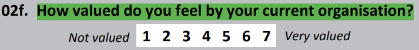

Background
In 2018, the New Zealand Attitudes and Values Study (NZAVS) developed the following measures to investigate classical theories of virtue and human flourishing.
Forgivingness (6 items included for project)
Forgivingness versus Vengeful Rumination – 3 items
- Sometimes I can’t sleep because of thinking about past wrongs I have suffered. [Adapted from Caprara]
- I can usually forgive and forget when someone does me wrong. [Adapted from Berry et al]
- I find myself regularly thinking about past times that I have been wronged. [New]
Caprara, G. V. (1986). Indicators of aggression: The dissipation-rumination scale. Personality and Individual Differences, 7(6), 763-769.
Berry, J. W., Worthington, E. L., O’Connor, L. E., Parrott, L., & Wade, N. G. (2005). Forgivingness, vengeful rumination, and affective traits. Journal of Personality, 73(1), 183-226.
- People close to me probably think I hold a grudge too long.
- I can forgive a friend for almost anything.
- If someone treats me badly, I treat him or her the same.
- I try to forgive others even when they don’t feel guilty for what they did.
- I can usually forgive and forget an insult. [item above similar to this item]
- I feel bitter about many of my relationships.
- Even after I forgive someone, things often come back to me that I resent.
- There are some things for which I could never forgive even a loved one.
- I have always forgiven those who hurt me.
- I am a forgiving person.
Short Almost Perfect Scale (SAPS) – 3 items
Rice, K. G., Richardson, C. M., & Tueller, S. (2014). The short form of the revised almost perfect scale. Journal of Personality Assessment, 96(3), 368-379.
The following items are designed to measure certain attitudes people have toward themselves, their performance, and toward others. Please indicate how strongly you disagree or agree with each statement. It is important that your answers be true and accurate for you. • I have high expectations for myself.
- Doing my best never seems to be enough.
- I set very high standards for myself.
- I often feel disappointment after completing a task because I know I could have done better.
- I have a strong need to strive for excellence.
- My performance rarely measures up to my standards.
- I expect the best from myself.
- I am hardly ever satisfied with my performance.
Focal covariates and predictors (12 items included for project)
Emotion regulation (3 items)
- When I feel negative emotions, my emotions feel out of control.
- When I feel negative emotions, I supress or hide my emotions.
- When I feel negative emotions, I change the way I think to help me stay calm.
Adapted from Difficulties with Emotion Regulation Scale (DERS) – Item 1 Gratz, K. L., & Roemer, L. (2004). Multidimensional assessment of emotion regulation and dysregulation: Development, factor structure, and initial validation of the difficulties in emotion regulation scale. Journal of psychopathology and behavioral assessment, 26(1), 41-54. doi: 10.1023/B:JOBA.0000007455.08539.94
Adapted from Emotion Regulation Questionnaire (ERQ) – Items 2 and 3 Gross, J. J., & John, O. P. (2003). Individual differences in two emotion regulation processes: Implications for affect, relationships, and well-being. Journal of Personality and Social Psychology, 85(2), 348-362. doi: 10.1037/0022-3514.85.2.348
Valued in workplace (1 item: Gratitude)

Received support (3 items: Generosity)

Hours socializing (4 items: Social networks)

Critical predictors/covariates also added as part of the project
Life events inventory (1 item)

Items rotated in early to supplement project – 8 items included for project
Attitudes toward religion – 3 items
Gibson, N. J. S., & Barnes, K. (2013). The varieties of religious nones: factor structure and validity of the non-religosity scales. Paper presented at: The International Association for the Psycholology of Religion, Lausanne, Switzerland.
- The teachings of traditional religions are still helpful today.
- I oppose religion in any form.
- All things considered, religion is a cause for good in the world.
Spiritual identification – 1 item
Postmes, T., Haslam, S. A., & Jans, L. (2013). A single‐item measure of social identification: Reliability, validity, and utility. British Journal of Social Psychology, 52(4), 597-617.
- I identify as a spiritual person.
Criminal Justice Attitudes – 4 items
Developed for NZAVS
- With enough support and professional help, people who have committed violent offences can be rehabilitated to become safe members of our society.
- With enough support and professional help, people who have committed sexual offences can be rehabilitated to become safe members of our society.
- A publicly available online database of all convicted sex offenders in NZ.
- The current ‘3 Strikes’ law for violent/sexual offences, where the maximum possible sentence must be imposed without parole upon the third conviction.